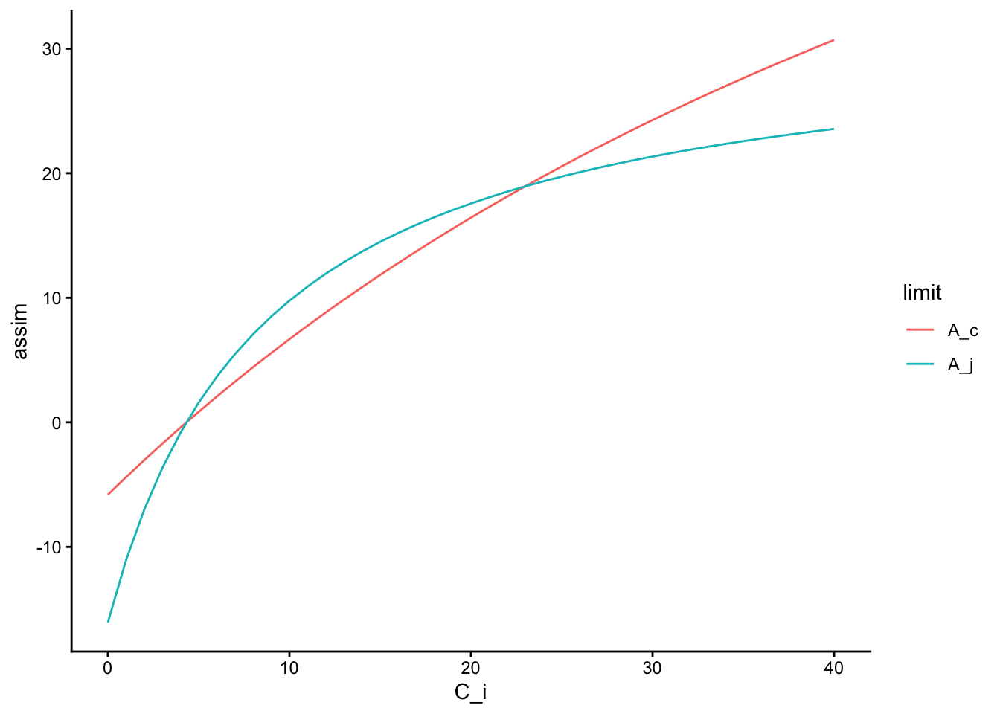
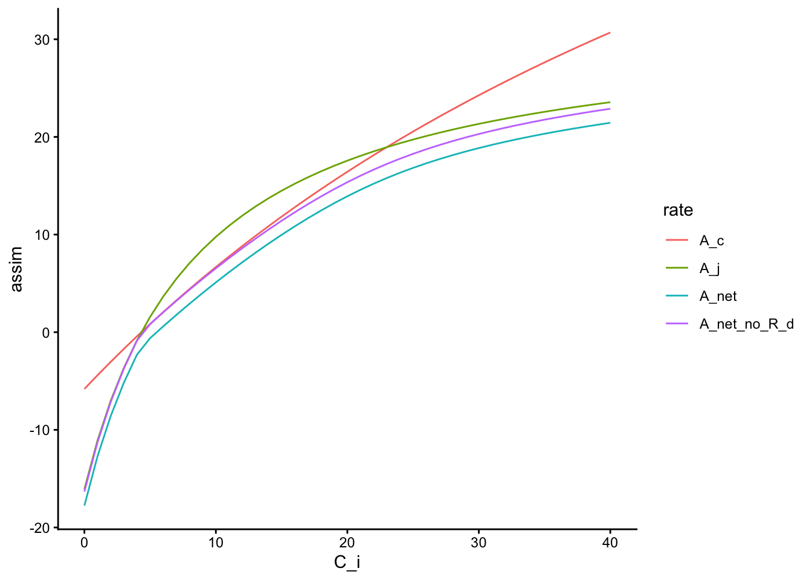
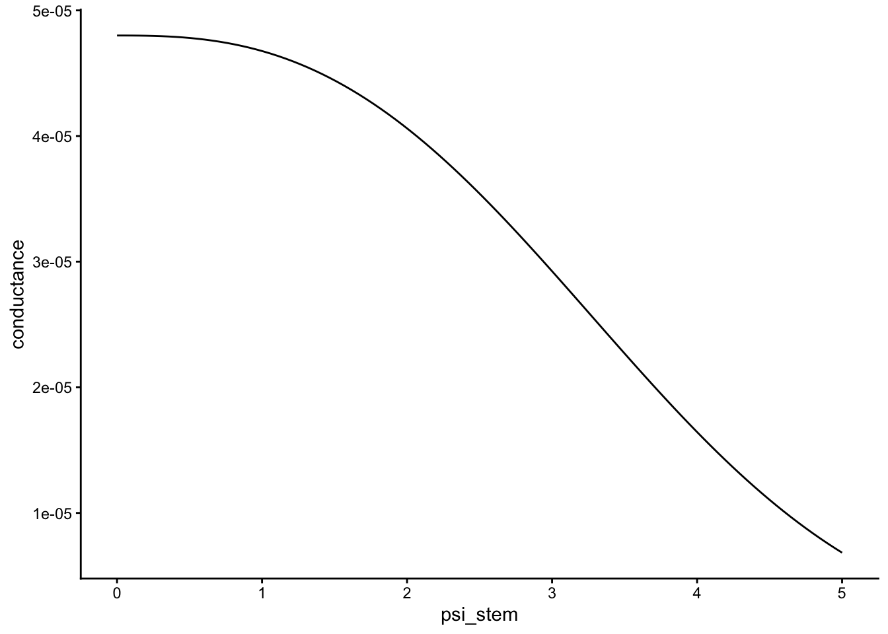
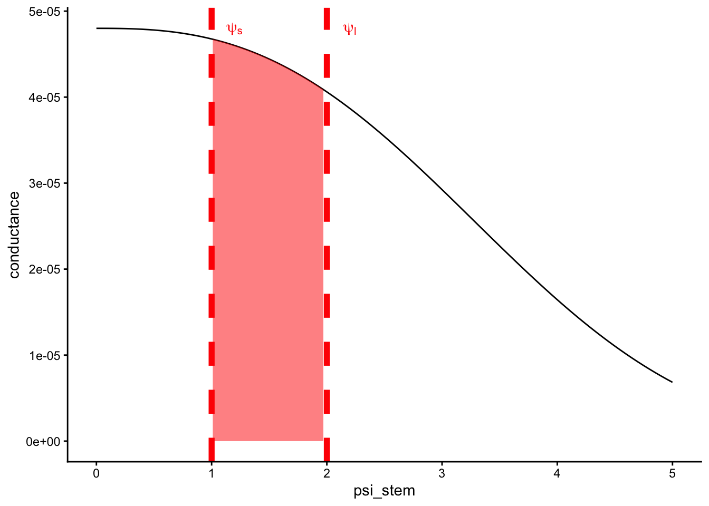
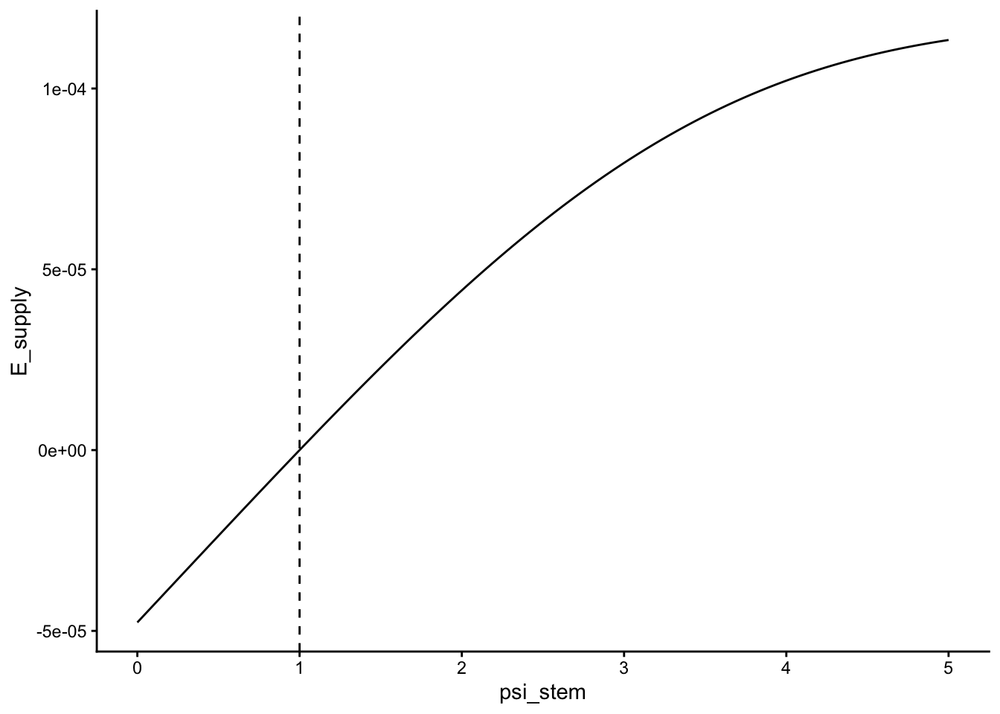
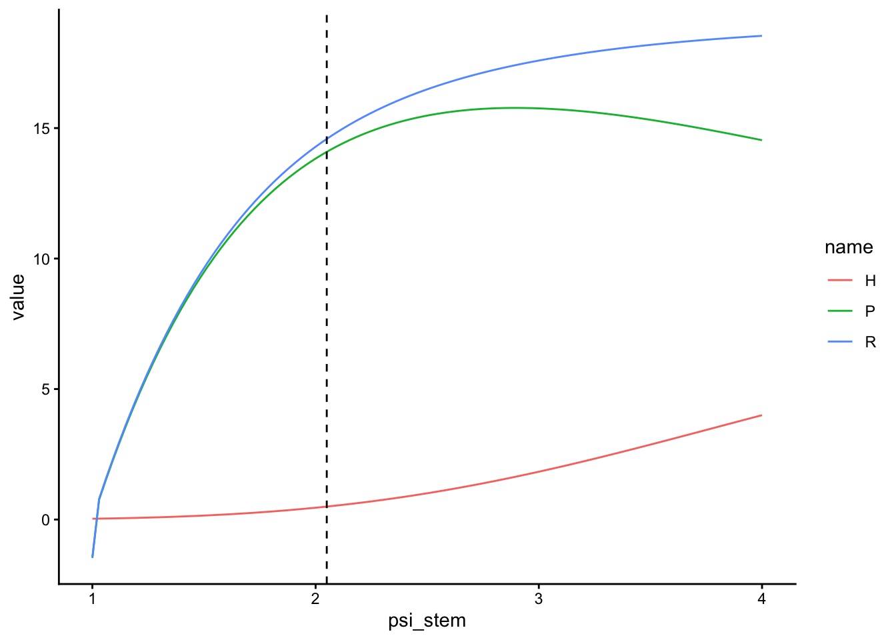
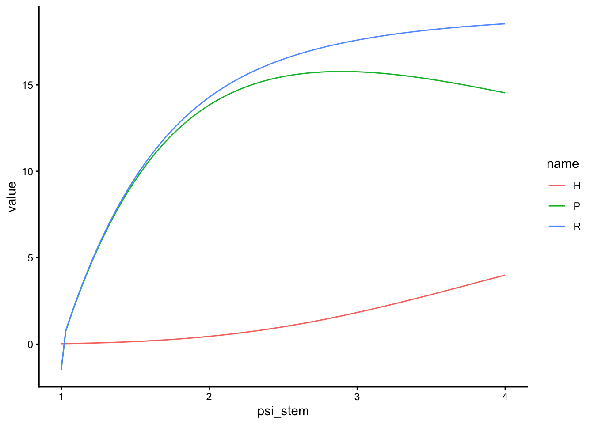

sw <- list(
vcmax_25 = 96, # umol m^-2 s^-1
c = 2.680147, # unitless
b = 3.898245, # -MPa
psi_crit = 5.870283, # -MPa
root_c = 2.680147, # unitless
root_b = 3.898245, # -MPa
root_psi_crit = 5.870283, # -MPa
beta2 = 1.5, # exponent for effect of hydraulic risk (unitless)
jmax_25 = 157.44, # maximum electron transport rate umol m^-2 s^-1
a = 0.30, # quantum yield of photosynthetic electron transport (mol mol^-1)
curv_fact_elec_trans = 0.7, # curvature factor for the light response curve (unitless)
curv_fact_colim = 0.99, # curvature factor for the colimited photosythnthesis equatiom
GSS_tol_abs = 1e-3, # ???
vulnerability_curve_ncontrol = 100, # ????
ci_abs_tol = 1e-3, # ???
ci_niter = 1000,
g1_TF24 = 7.5, # cost parameter for TF24 profit model umol m^-2 s^-1
beta_R_H = 3.4e2, #proportionality constant between minimum horizontal (intraleyer) root hydraulic resistance and C_r^-1 in [MPa * s * (mol C) / (mol H2O)]
beta_R_V = 9.4e3
)
leaf <- Leaf(
vcmax_25 = sw$vcmax_25,
c = sw$c,
b = sw$b,
psi_crit = sw$psi_crit,
root_c = sw$root_c,
root_b = sw$root_b,
root_psi_crit = sw$root_psi_crit,
beta2 = sw$beta2,
jmax_25 = sw$jmax_25,
a = sw$a,
curv_fact_elec_trans = sw$curv_fact_elec_trans,
curv_fact_colim = sw$curv_fact_colim,
GSS_tol_abs = sw$GSS_tol_abs,
vulnerability_curve_ncontrol = sw$vulnerability_curve_ncontrol,
ci_abs_tol = sw$ci_abs_tol,
ci_niter = sw$ci_niter,
g1_TF24 = sw$g1_TF24,
beta_R_H = sw$beta_R_H,
beta_R_V = sw$beta_R_V
)Assimilation & hydraulics
theory
NotePrerequisites
This page builds on the FF16 model and The maths, gently. Read those first if the notation here is unfamiliar.
The idea first
A leaf takes in carbon dioxide through tiny pores called stomata. When the stomata open, carbon dioxide enters and water vapour escapes. The lost water must be replaced by water drawn from the soil through the plant’s hydraulic system.
This creates a trade-off. Opening the stomata further can increase photosynthesis, but it also increases transpiration and places more strain on the water-transport pathway. Closing them protects that pathway, but restricts carbon dioxide and therefore limits photosynthesis.
TF24 represents this trade-off as an optimisation problem. For each possible leaf xylem water potential, the model calculates a photosynthetic benefit and a hydraulic cost. It then chooses the water potential at which their difference, called profit, is greatest. This page develops those three pieces in order: photosynthetic revenue, hydraulic cost, and the numerical search for maximum profit.
This leaf-level carbon and water balance is central to the TF24 strategy. It determines the carbon assimilation and transpiration of a unit of leaf area under the current light, atmospheric, and soil-water conditions. The whole-plant strategy then uses those leaf-level rates in its growth and water-use calculations.
Introduction
TF24 extends the plant model with processes that link rainfall, soil water, plant hydraulics, transpiration, and carbon assimilation. This page focuses on one part of that system: the Leaf submodel that chooses a stomatal and hydraulic operating point. Its answer depends on plant traits and on the current water availability, vapour pressure deficit, and other environmental conditions. The supplied leaf temperature adjusts the photosynthetic biochemistry: plant recalculates \(V_{c,max}\), \(J_{max}\), the CO\(_2\) compensation point, Michaelis–Menten terms, and dark respiration from it.
The accompanying Soil water & root uptake page describes the other side of the coupling: how rainfall, drainage, and root uptake determine the soil-water conditions supplied to this leaf calculation.
Several parameters are especially important for the leaf calculation:
vcmax_25: the maximum rate of carboxylation at 25 °C (\(\mu mol~m^{-2}~s^{-1}\))p_50: the leaf water potential (\(\psi_l\)) at which 50% of conductivity is lostK_s: the maximum hydraulic conductivity (\(kg~m^{-2}~s^{-1}~MPa^{-1})\)c: the shape parameter for the hydraulic vulnerability curve (unitless)b: the sensitivity parameter for the hydraulic vulnerability curve (-MPa)psi_crit: the critical \(\psi_l\) at which 95% of conductivity is lost (-MPa)
Together with the other TF24 traits and parameters, these values determine how the Leaf submodel responds to its environment. The implementation lives in leaf_model.cpp; the sections below explain the calculation conceptually.
Profitmax
Plants vary the aperture of their stomata in response to conditions such as soil moisture and atmospheric dryness. Several theoretical frameworks can be used to represent that response. TF24 uses the profitmax model, which assumes that the chosen operating point is the one that maximises profit, \(P~(\mu mol~m^{-2}~s^{-1})\).
NoteA second stomatal model lives in the code, but is dormant
The Leaf submodel also carries an implementation of the Medlyn et al. (2011) stomatal-conductance model — an empirical \(g_1\) formulation (medlyn_model_gs, with settable g0/g1 and a soil-moisture stress factor \(\beta\) derived from the wilting point and field capacity). It is not on the default TF24 compute path, which optimises \(\psi_l\) directly via profitmax. It exists as a comparison/exploration tool, so treat any Medlyn-style \(g_1\) behaviour as opt-in, not the model’s default stomatal response.
Profit is the difference between photosynthetic revenue, \(A~(\mu mol~m^{-2}~s^{-1})\), and hydraulic cost, \(C~(\mu mol~m^{-2}~s^{-1})\):
\[ P~(\psi_l) = A~(\psi_l) - C~(\psi_l). \tag{1}\]
Later code and figures label photosynthetic revenue as \(R\) and hydraulic cost as \(H\). These are the same two quantities denoted by \(A\) and \(C\) in Equation 1; only the labels change.
\(\psi_l~(-MPa)\) is the water potential of the canopy xylem. In this page’s notation, water stress is expressed as the magnitude of a negative potential: a larger value means a more negative physical water potential. Changing \(\psi_l\) changes how much water the hydraulic pathway can supply and therefore the stomatal conductance that can be supported.
Both \(A\) and \(C\) are therefore functions of \(\psi_l\). The model evaluates their difference over the feasible range of \(\psi_l\) and finds the value that gives the largest \(P\).
We begin with the revenue side of the calculation.
Revenue
Revenue in profitmax is the photosynthetic carbon assimilation rate \(A~(\mu mol~m^{-2}~s^{-1})\) supported at a given stomatal conductance. At this stage, it is the carbon gain before the hydraulic cost is subtracted.
Stomata connect the carbon and water calculations. Fick’s first law describes the flux of \(CO_2\) down the concentration gradient from the atmosphere, \(C_a~(Pa)\), to the intercellular spaces in the leaf, \(C_i~(Pa)\):
\[ A~(C_i) = \frac{g_c(\psi_{l})(C_a - C_i)}{P_{atm}}. \tag{2}\]
Here, \(P_{atm}~(kPa)\) is atmospheric pressure and \(g_c\) is stomatal conductance to \(CO_2\). Water vapour and carbon dioxide diffuse at different rates, so conductance to \(CO_2\) is calculated from conductance to water, \(g_w\), as
\[ g_c(\psi_{l}) = \frac{g_w(\psi_{l})}{1.6}, \tag{3}\]
where the factor 1.6 accounts for the difference in diffusivity between \(H_2O\) and \(CO_2\) at the stomatal boundary.
For any candidate \(\psi_l\), the hydraulic calculation supplies a value of \(g_w\), and therefore of \(g_c\). The remaining unknown is \(C_i\). This cannot be read directly from Equation 2 because assimilation also depends on \(C_i\) through leaf biochemistry. The model must find a value of \(C_i\) at which the diffusive supply of carbon dioxide and its biochemical use agree.
The biochemical side uses the photosynthesis model of Farquhar et al. (1980). It calculates a Rubisco-limited rate, \(A_c~(umol~m^{-2}~s^{-1})\), and an electron-transport-limited rate, \(A_j~(umol~m^{-2}~s^{-1})\). Net assimilation follows the more limiting process, with a smooth transition between them.
The electron-transport-limited rate depends on both light availability and \(C_i\):
\[ A_j=\frac{J(C_i-\Gamma^*)}{4(C_i+2\Gamma^*)}, \tag{4}\]
where \(\Gamma^*~(Pa)\) is the \(CO_2\) compensation point. The electron transport rate \(J~(umol~m^{-2}~s^{-1})\) carries the effect of irradiance into the calculation:
\[ J=\frac{aQ+J_{max}-\sqrt{(aQ+J_{max})^2-4caQJ_{max}}}{2c}, \tag{5}\]
where \(a~(mol~photon~mol^{-1}~electron)\) is the effective quantum yield of electron transport, \(Q~(umol~m^{-2}~s^{-1})\) is photosynthetic photon flux density (PPFD), \(c\) is the unitless curvature of the light-response curve, and \(J_{max}~(umol~m^{-2}~s^{-1})\) is the maximum electron transport rate.
NoteTwo different curvature parameters use the symbol \(c\)
The light-response equation above and the hydraulic vulnerability equation below both use \(c\), but they refer to different parameters. In the code, the light-response curvature is curv_fact_elec_trans, while the vulnerability curve uses c.
The Rubisco-limited rate is
\[ A_c=\frac{V_{c,max}(C_i-\Gamma*)}{C_i + K_m}, \tag{6}\]
where \(K_m~(Pa)\) is the effective Michaelis–Menten constant. \(V_{c,max}\), \(\Gamma^*\), and \(K_m\) are all temperature-dependent variables.
The next example compares \(A_c\) and \(A_j\) across a range of \(C_i\) values.
The calculation needs both fixed strategy parameters and environmental or plant-state values that can change through time. We first create a Leaf object to hold the fixed parameters. Unlike an Individual or a patch, this object represents the physiology of a unit of leaf area rather than a whole plant or population.
The following executable example uses the Leaf() interface in plant 2.0.0.9002. The constructor now makes the root-hydraulics and numerical-control inputs explicit; hk_s is not a Leaf() argument in this API.
Next, set_physiology supplies the conditions at one point in time. These include the light and atmospheric environment, soil water, and size-dependent properties of the plant. Unlike the fixed parameters passed to Leaf(), these values can change as an individual grows and its environment changes. Here they are held constant so that the leaf-level relationships can be viewed in isolation.
psi_soil = c(1)
soil_depth = c(0.5)
mass_root_prop_ = c(1)
area_leaf_ = 0.05
PPFD = 1000
leaf_specific_conductance_max = 4.8e-05
atm_vpd = 2
ca = 40
sapwood_volume_per_leaf_area = 1.8e-04
rho = 608
a_bio = 0.0245
leaf_temp_ = 25
atm_o2_kpa_ = 21
atm_kpa_ = 101.3
leaf$set_physiology(area_leaf = area_leaf_, mass_root_prop = mass_root_prop_, rho = 608, a_bio = 0.0245, PPFD = PPFD, psi_soil = psi_soil, soil_depth = soil_depth, leaf_specific_conductance_max = leaf_specific_conductance_max, atm_vpd = atm_vpd, ca = ca, sapwood_volume_per_leaf_area = sapwood_volume_per_leaf_area, leaf_temp = leaf_temp_, atm_o2_kpa = atm_o2_kpa_, atm_kpa = atm_kpa_)We now evaluate the biochemical rates over a sequence of \(C_i\) values.
C_i = seq(0,40,1)The Leaf object uses similar names for calculation methods and stored results. For example, leaf$assim_electron_limited is a function that takes \(C_i\) as an input, whereas leaf$assim_electron_limited_ stores a calculated result. The first plot calls the functions directly.
tibble(C_i = C_i) %>%
mutate(A_j = map_dbl(C_i, leaf$assim_electron_limited),
A_c = map_dbl(C_i, leaf$assim_rubisco_limited)) %>%
pivot_longer(cols = c(A_j, A_c), names_to = "limit", values_to = "assim") %>%
ggplot(aes(x = C_i, y = assim))+
geom_line(aes(colour = limit, group = limit)) +
theme_classic()
Both potential rates increase with \(C_i\), but they do not increase at the same rate. Which process is most limiting can therefore change across the range of \(C_i\). The model combines them with a smooth co-limitation function (see the paper for details).
tibble(C_i = C_i) %>%
mutate(A_j = map_dbl(C_i, leaf$assim_electron_limited),
A_c = map_dbl(C_i, leaf$assim_rubisco_limited)) %>%
mutate(A_net = map_dbl(C_i, leaf$assim_colimited)) %>%
mutate(A_net_no_R_d = A_net + leaf$R_d_) %>%
pivot_longer(cols = c(A_j, A_c,A_net, A_net_no_R_d), names_to = "rate", values_to = "assim") %>%
ggplot(aes(x = C_i, y = assim))+
geom_line(aes(colour = rate, group = rate)) +
theme_classic()
The A_net calculation also subtracts dark respiration. Adding that respiration term back helps show how the co-limited curve relates to \(A_c\) and \(A_j\) before the respiratory deduction.
Cost
Photosynthesis requires a continuous supply of water from the soil to the canopy. Water moves along a potential gradient, so the leaf xylem must be at a more negative physical water potential than the soil. In the positive-magnitude notation used here, this means that \(\psi_l\) must be larger than \(\psi_s\).
Making that gradient steeper can supply more water, but it also reduces the conductance of the xylem pathway as embolism risk increases. The formulation developed on this page represents the hydraulic pathway with the following vulnerability curve:
\[ k_l = k_{l,max}e^{-{(\frac{\psi_l}{b})}^c}. \tag{7}\]
The example below plots this decline using the parameter values defined above.
data <-
tibble(psi_stem = seq(0, 5, length.out = 100)) %>%
mutate(
proportion_conductance = map_dbl(psi_stem, leaf$proportion_of_conductivity),
conductance = 4.8e-05*proportion_conductance
)
data %>%
ggplot(aes(x = psi_stem, y = conductance)) +
geom_line() +
theme_classic()
\(b~(MPa)\) controls the sensitivity of the curve and \(c\) controls its shape. The value of \(b\) is calculated as
\[b = \frac{p_{50}}{-log(1-\frac{50}{100}^{\frac{1}{c}})},\]
where \(p_{50}\) is the \(\psi_l\) at which 50% of hydraulic conductance is lost. If two points on a hydraulic vulnerability curve are known, they can be used to calculate \(c\). Here, an empirical value for \(c\) is obtained from AusTraits.
\(p_{50}\) is in turn calculated from an empirical relationship with the hydraulic conductivity of the xylem pathway. In this relationship, more conductive stems lose conductivity at a less negative water potential (Liu et al. 2019):
\[p_{50} = 1.73\frac{K_s}{2}^{-0.72}\]
\(k_{l,max}\) is the maximum hydraulic conductance at \(\psi_l = 0\):
\[k_{l,max} = \frac{K_s\theta}{h\eta_c},\]
Here, \(\theta~(m^2~sapwood~m^{-2}~leaf~area)\) is the Huber value, \(h\) is plant height, and \(\eta_c~(unitless)[0,1]\) describes the average relative position of leaves within the canopy. The TF24 strategy provides more context for these quantities. \(K_s\), \(\theta\), and \(c\) parameterise the hydraulic relationships, while the TF24 hyper-parameterisation handles the remaining parameter links. Plant height is a dynamic state, so \(k_{l,max}\) can change as the plant grows.
For a given soil water potential and candidate leaf water potential, the water that the pathway can supply per unit leaf area is the integral of conductance across that potential interval:
\[ E_{supply} = \int^{\psi_l}_{\psi_s}k_l(\psi)\delta\psi \tag{8}\]
Graphically, \(E_{supply}\) is the area under the conductance curve between the soil water potential, \(\psi_s~(-MPa)\), and the leaf xylem water potential, \(\psi_l~(-MPa)\).
data %>%
ggplot(aes(x = psi_stem, y = conductance)) +
geom_line() +
theme_classic() +
geom_area(aes(ifelse(psi_stem > 2 | psi_stem < 1, NA, psi_stem), conductance), fill = "red", alpha= 0.5) +
geom_vline(xintercept = 2, col = "red", linewidth = 2, linetype = "dashed") +
geom_vline(xintercept = 1, col = "red", linewidth = 2, linetype = "dashed") +
annotate("text", x = 1.2, y = 4.8e-05, label = expression(psi[s]), col = "red") +
annotate("text", x = 2.2, y = 4.8e-05, label = expression(psi[l]), col = "red")
Holding \(\psi_s\) fixed, the next plot shows how \(E_{supply}\) changes as \(\psi_l\) becomes more negative. Supply initially rises as the potential gradient increases, but the rise tapers because conductance is simultaneously being lost along the vulnerability curve. Increasing hydraulic strain therefore produces progressively smaller gains in water supply.
data %>%
mutate(E_supply = map2_dbl(psi_stem, psi_soil, leaf$transpiration_full_integration)) %>%
ggplot(aes(x = psi_stem, y = E_supply)) +
geom_vline(xintercept = psi_soil, linetype = "dashed") +
geom_line() +
theme_classic()
The feasible range ends at a critical value, \(\psi_{crit}\), beyond which the xylem is assumed to fail catastrophically. Here, \(\psi_{crit}\) is the \(\psi_l\) at which 95% of conductance has been lost.
The revenue calculation requires stomatal conductance, while the hydraulic calculation gives water supply. The two are joined by requiring water supplied through the plant to equal water lost from the leaf:
\[E_{supply} = E_{demand}\]
Atmospheric demand is
\[ E_{demand} = \frac{g_sD}{P_{atm}}, \] {#eq-e-demand}
where \(D~(kPa)\) is atmospheric vapour pressure deficit and \(g_s\) is stomatal conductance. The model uses atmospheric VPD rather than leaf-to-atmosphere VPD; the latter would also depend on differences between leaf and air temperature.
For a fixed \(D\), increasing \(g_s\) increases \(E_{demand}\). Meeting that demand requires a more negative leaf water potential, which causes further loss of hydraulic conductance. This closes the central loop: opening stomata can raise carbon assimilation, but doing so also raises water demand and hydraulic risk.
To compare that risk directly with carbon revenue, the model expresses hydraulic cost, \(H~(\psi_l)\), in the same units as assimilation: \[ H(\psi_l) = b_1z(1-e^{-{(\frac{\psi_l}{b})}^c})^{b_2}. \tag{9}\]
Here, \(z~(m^3~sapwood~m^{-2}~leaf~area)\) is sapwood volume per leaf area, \(b_1(\mu mol~m^{-2}~s^{-1})\) converts conductivity loss to a carbon cost, and \(b_2~(unitless)\) controls the shape of the cost curve. The term in parentheses is the proportion of conductivity lost at \(\psi_l\), so \(H=0\) when \(\psi_l = 0\) and increases as conductivity is lost.
\(z\) depends on plant size and the Huber value, and represents the volume of sapwood supplying each unit of leaf area:
\[z = \frac{\theta*h}{\eta_c}\]
Profit
We can now put the two sides together. For each candidate \(\psi_l\), the model calculates photosynthetic revenue and hydraulic cost, then subtracts the second from the first. Revenue tends to benefit from the additional stomatal opening supported by a steeper water-potential gradient, while hydraulic cost rises as conductivity is lost. Their difference therefore has a maximum within the feasible range.
The first example calculates the revenue, cost, and profit curves step by step.
f <- function(psi_stem) {
leaf$set_leaf_states_rates_from_psi_stem(psi_stem, psi_soil)
R = leaf$assim_colimited_
H = leaf$hydraulic_cost_TF(psi_stem)
P = R-H
tibble(R, H, P)
}
data <-
tibble(psi_stem = seq(1, 4, length.out = 100)) %>%
mutate(outcomes = map(psi_stem, f)) %>%
unnest(outcomes)
data %>%
pivot_longer(cols = c(P, R, H)) %>%
ggplot(aes(x = psi_stem, y = value)) +
geom_line(aes(colour = name, group = name)) +
theme_classic() +
geom_vline(xintercept = 2.05, linetype = "dashed")
The explicit calculation is useful for seeing where the three curves come from. In normal use, TF24 performs the same sequence through its built-in profit_psi_stem_TF function.
f <- function(psi_stem){
leaf$profit_psi_stem_TF(psi_stem, psi_soil)
tibble(H = leaf$hydraulic_cost_, R = leaf$assim_colimited_, P = R-H)
}
data <-
tibble(psi_stem = seq(1, 4, length.out = 100)) %>%
mutate(outcomes = map(psi_stem, f))%>%
unnest(outcomes)
data %>%
pivot_longer(cols = c(H,R,P)) %>%
ggplot(aes(x = psi_stem, y = value)) +
geom_line(aes(colour = name, group = name)) +
theme_classic()
Optimising profit
The leaf submodel ultimately needs two outputs under the current environmental conditions and plant state: carbon assimilation and water use per unit leaf area. Obtaining them requires finding the \(\psi_l\) that maximises \(P\) in Equation 1. Once that operating point is known, the corresponding transpiration \(E\) can also be passed to the soil-water calculation.
TF24 uses a golden-section search. The search starts with a lower and upper bound and repeatedly narrows the interval containing the maximum until that interval is smaller than a chosen tolerance. Here, the quantity being varied is \(\psi_l\). Its bounds are \(\psi_s\) and \(\psi_{crit}\): the leaf cannot be less negative than the soil that supplies it, and it is not allowed to pass the critical loss-of-conductivity threshold.
The following code first demonstrates the search manually. It evaluates profit at two interior points, discards the part of the interval that cannot contain the maximum, and repeats.
#golden ratio
gr = (sqrt(5) + 1) / 2;
bound_a = NA
bound_b = NA
bound_c = NA
bound_d = NA
#set lower boundary to psi_soil
bound_a = leaf$psi_soil_;
#set upper boundary to psi_crit
bound_b = sw$psi_crit;
#tolerance value
delta_crit = 0.01;
bound_c = bound_b - (bound_b - bound_a) / gr;
bound_d = bound_a + (bound_b - bound_a) / gr;
while (abs(bound_b - bound_a) > delta_crit) {
profit_at_c = leaf$profit_psi_stem_TF(bound_c, psi_soil);
profit_at_d = leaf$profit_psi_stem_TF(bound_d, psi_soil);
if (profit_at_c > profit_at_d) {
bound_b = bound_d;
} else {
bound_a = bound_c;
}
bound_c = bound_b - (bound_b - bound_a) / gr;
bound_d = bound_a + (bound_b - bound_a) / gr;
}
(opt_psi_stem = ((bound_b + bound_a) / 2))[1] 2.895207(profit = leaf$profit_psi_stem_TF(opt_psi_stem, psi_soil))[1] 15.77304(transpiration = leaf$transpiration_)[1] 7.629592e-05Validation against the compiled implementation
The final chunk calls the corresponding built-in TF24 Leaf optimisation. Its purpose is to check that the compiled implementation returns the same optimum, profit, and transpiration as the manual search.
leaf$optimise_psi_stem_TF()
leaf$profit_[1] 15.77304leaf$transpiration_[1] 7.62673e-05The complete calculation can therefore be read as a short sequence:
- choose a candidate leaf xylem water potential \(\psi_l\);
- calculate the water supply and the stomatal conductance it can support;
- solve for \(C_i\) and calculate photosynthetic assimilation;
- calculate the hydraulic cost associated with lost conductivity;
- subtract cost from assimilation and search for the \(\psi_l\) with the highest profit.
TF24 repeats this calculation as plant size and environmental conditions change. The resulting assimilation contributes to the whole-plant carbon balance, while transpiration feeds back on the soil-water state described in Soil water & root uptake.